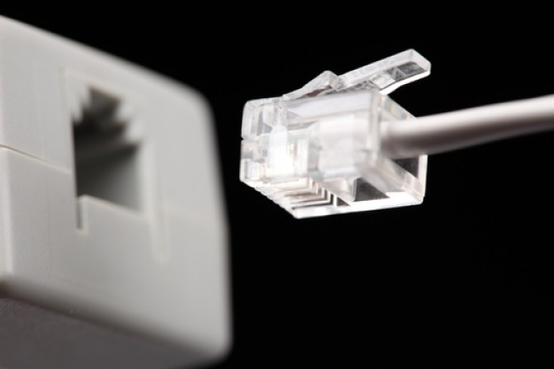
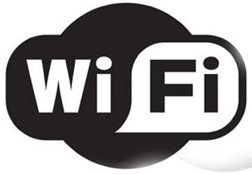
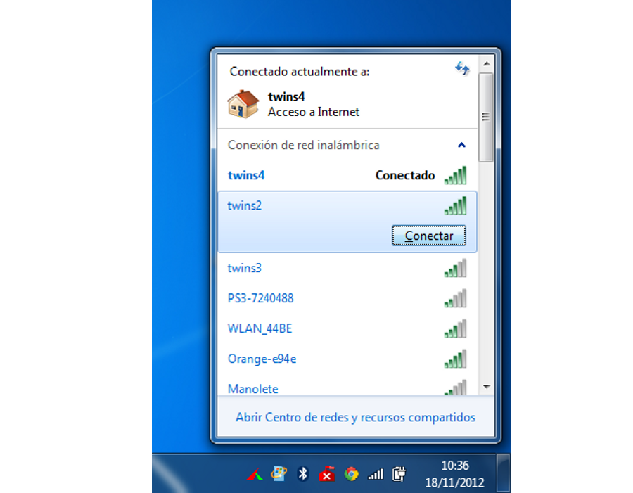
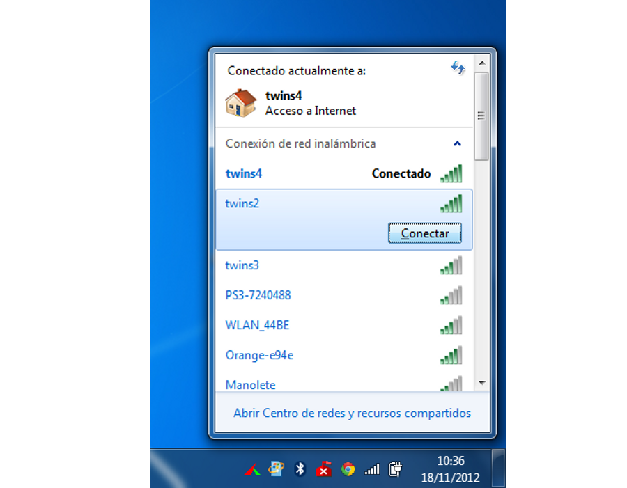
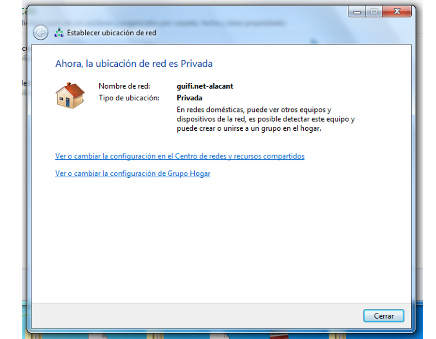
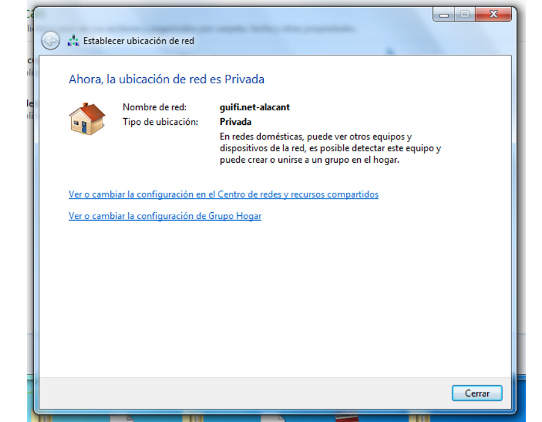
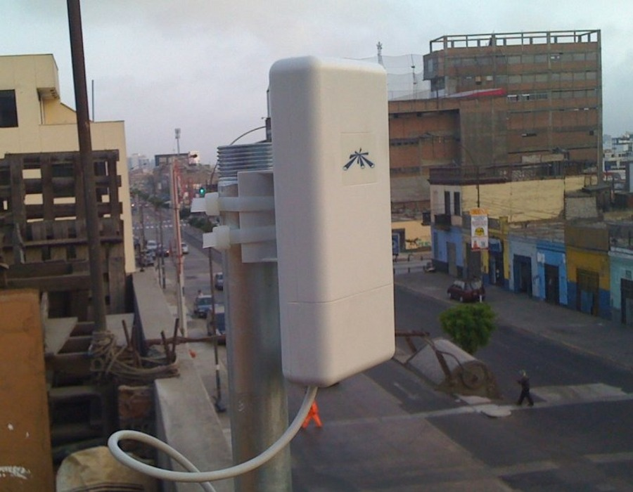
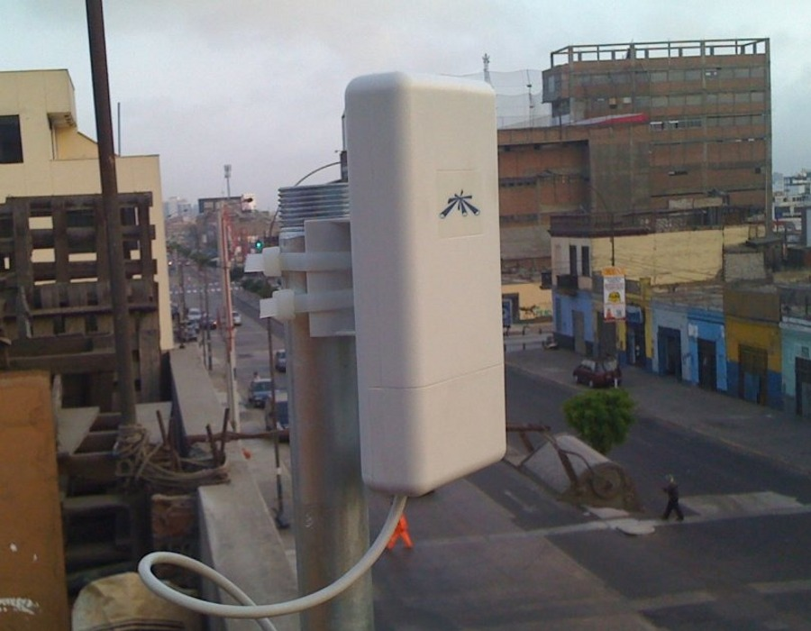

Universitat per a majors
guifi.net
Taller de iniciación y primeros pasos

Apreta la tecla → para avanzar.
Internet

Internet es un conjunto descentralizado de redes de comunicación interconectadas que utilizan la familia de protocolos TCP/IP, garantizando que las redes físicas heterogéneas que la componen funcionen como una red lógica única, de alcance mundial.
Conectando físicamente a internet

Existen diferentes tecnologías de acceso a la red de redes, de las cuales vamos a nombrar las más utilizadas para conectar nuestra recinto (o nuestra casa) a internet.
- ADSL. A través del par de cobre de telefonía nos conectan a la central de la operadora. Tecnología obsoleta y muy limitada, pero ampliamente utilizada debido al gran despliegue de infraestructura de telefonía que reaprovecha.
- Fibra óptica. Tecnología mucho más moderna, prácticamente sin límites de trasferencia. Más cara y difícil de desplegar.


Cambia de foto con las teclas: ↑ y ↓
Conectar el ordenador a la red

Para conectar el ordenador a la red, tenemos dos tecnologías principales que seguro que conocéis:
- Cable ethernet. Un cable físico nos conecta a un router, a través de conectores Ethernet.
- Wireless. Utilizando antenas y tecnología inalámbrica en la banda de los 2,4Ghz, conectamos al router.


Cambia de foto con las teclas: ↑ y ↓
Estado de la red en Windows 7
Podemos determinar el estado de la red mediante la información que se nos muestra en el área de notificaciones.
- Red inalámbrica. Un icono nos indicará el estado de la red, y pulsando sobre él, podremos establecer conexión a cualquier otra red accesible a la que tengamos acceso.
- Red cableada. Nuevamente un icono nos indicará el estado de la red. Un fallo en la red cableada suele indicar un problema más serio (el cable está desconectado, o el router no funciona).
Iconos del estado de la red
Los iconos que vemos en la barra de estado nos indican el estado actual de la conexión de nuestro equipo. Veámoslos:
 Hay redes inalámbricas disponibles.
Hay redes inalámbricas disponibles.- Estamos conectados a la red inalámbrica, pero Internet no está disponible.
- Conectados con poca calidad de señal.
 


 

Cambia de foto con las teclas: ↑ y ↓
La red cableada
Si utilizamos una conexión a internet mediante cable, el icono informativo de la barra de tareas es diferente. A través de cable es mucho más simple conocer el estado de la conexión.


Cambia de foto con las teclas: ↑ y ↓
¿Qué es guifi.net?

Guifi.net es una red de telecomunicaciones
libre, abierta y
neutral, mayoritariamente inalámbrica, con más de 30.000 nodos, de los cuales
más de 20.000 están operativos.
Licencia procomún de la Red Abierta, Libre y Neutral:
- Libertad de uso de la red.
- La red libre no tiene dueño, y está conformada por múltiples tecnologías y componentes.
- Puedes unirte y extender la red siempre en las mismas condiciones aceptando la libre circulación de comunicaciones por ella.

Cambia de foto con las teclas: ↑ y ↓
Evolución en Castellón de la red guifi.net
Actualmente en Castellón hay 271 (2010), 1012 (2011), 2.398 (2012), 3.627 (2013) nodos activos y 175 (2010), 363 (2011), 954 (2012), 1.391 proyectados.
Conectar como cliente a la red
Para conectar como clientes a la red necesitamos lo siguiente:
- Ubicación adecuada. Con visibilidad a alguno de
los nodos de cobertura.
- Darnos de alta en guifi.net para obtener una IP de la
red. Obtendremos una IPv4 propia, sólo válida para uso en
la zona guifi.net correspondiente.
- Una antena cliente que soporte 802.11a/n (5Ghz). Y configurar
esta antena con los datos proporcionados por la web para enlazar con el nodo de
cobertura.

 

Cambia de foto con las teclas: ↑ y ↓
¿Y una vez conectado a guifi.net?
Una vez conectado a la red, lo más demandado es conectar a Internet. Esto se puede lograr mediante alguna de las siguientes opciones:
- VPN con la UJI. La UJI ofrece salida a Internet a través de guifi.net a todos sus usuarios de la comunidad universitaria (PAS/PDI/Alumnos).
- VPN con otra ubicación. No es complicado compartir la conexión ADSL/Cable de una ubicación a través de guifi.net, por ejemplo mediante un túnel PPTP.
- Proxies federados de guifi.net. Podemos obtener un
acceso a internet básico mediante la conexión que ofrecen gratuitamente
los ayuntamientos de algunas localidades, o los propios usuarios de la red.
¿Acceso a Internet es el principal objetivo?
Ni mucho menos, la red libre tiene otras muchas utilidades:
- Aprendizaje de redes en entorno real.
- Compartición de archivos.
- Monitorización de ubicaciones. Medicion de consumo electrico, estación meteorológica, cámaras IP de videovigilancia, etc.
- Juego en red.
- Telefonía IP.
Enlaces de interés
Páginas web:
Lista de correo de usuarios de Castellón: